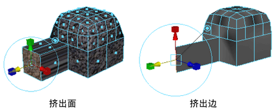

通过挤出多边形面、边或顶点，可以将多边形添加到现有网格。例如，挤出多边形网格上的某个面时，现有面在挤出的侧边上创建新连接面时会向内或向外压缩。
注： “挤出”(Extrude)选项窗口（“编辑网格 > 挤出”(Edit Mesh > Extrude) >  ）是上下文相关的。也就是说，显示“挤出”(Extrude)选项窗口时，只有适用于当前选定组件（面、边或顶点）的选项才会显示在窗口中。
）是上下文相关的。也就是说，显示“挤出”(Extrude)选项窗口时，只有适用于当前选定组件（面、边或顶点）的选项才会显示在窗口中。
）是上下文相关的。也就是说，显示“挤出”(Extrude)选项窗口时，只有适用于当前选定组件（面、边或顶点）的选项才会显示在窗口中。

使用以下方法之一访问“挤出”(Extrude)命令：
- 在主菜单栏中选择
- 从标记菜单中选择“倒角边”(Bevel Edge)（按住 Shift 键并单击鼠标右键）
- 在“建模工具包”(Modeling Toolkit)窗口中单击

- 按 Ctrl + E
- 在组件选择模式下时，按住 Shift 键并拖动任何变换操纵器。
有关如何使用“挤出”(Extrude)命令的详细信息，请参见相关主题。